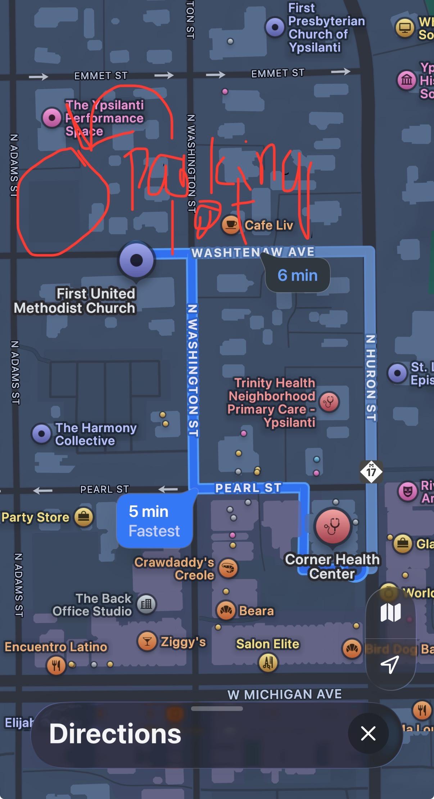

Before your first day
Content to Review
The following is a list of resources to review regarding commonly discussed topics during clinic.
Parking
United Methodist Church located at 209 Washtenaw Ave, allows Corner Health staff to park at their parking lot during work hours. The parking lot is about a 5 minute walk from the clinic. In order to park at the church, you will need to sign up for a permit here.
If you would like to park closer, there is onsite metered parking, but the 4-hour slots are limited. Otherwise, there are 2-hour metered parking spots that require you to move your car in the middle of the clinic. See directions to the church parking lot and other parking options below.
